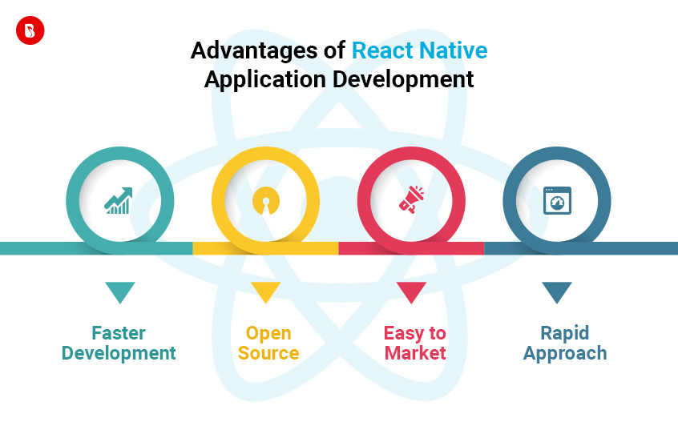
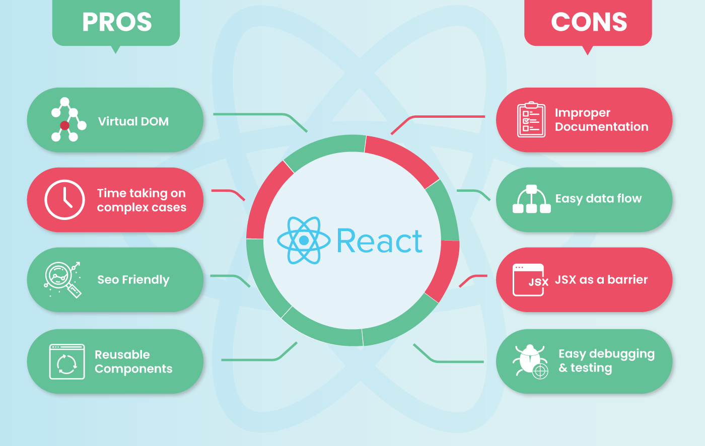

WHY REACTNATIVE?
Creation of Dynamic web applications is easier
Earlier creating a dynamic web page required a lot of complex coding. It needed specific HTML strings for dynamic web pages. Using ReactJS is no more an issue. It makes use of JSX which has a particular syntax and lets HTML quotes and tags to render particular subcomponents. In addition to this, it also supports building machine-readable code and mixes components into an individual variable file. In React regular JavaScript is not used for creating its templates.
It increases productivity and also helps in maintenance
Reusing components is the major advantage of React JS. Even Facebook has implemented React as it facilitates the reuse of system components. A developer can start with usual components like checkbox, button, etc. Once this is done you can move to wrapper components comprised of internal logic which makes it easier to manipulate and define objects used. This ensures consistency of application and facilitates code maintenance. Many companies like Walmart tend to use ReactJS. As all companies have common components like payment form elements, image carousel, bread crumbs, for example. Here comes into picture the reuse of components. Also to enable version management and further install components there are coding standards defined to maintain uniformity. This also enhances the speed of the application, which enjoys more customer retention.
Ensures faster rendering of Virtual DOM
The performance of any application depends upon the structure on which it is built. For building a high load application this is one of the major factors which is to be considered. But engines that are used these days cannot ensure bottlenecks because DOM (document object model) is tree-structured and even small layers can make drastic changes. To resolve this Virtual DOM was introduced. ReactJS can be used for heavy loaded and dynamic solutions. It is a virtual representation on the document object model and checks if all changes are applied to the virtual DOM. The real DOM tree is later updated and it also ensures that minimum time is consumed for this purpose. Using this method guarantees better user experience and performance.
It ensures to have a stable code
ReactJS uses downward data flow. This is because it ensures that smallest of changes that happen in child structure do not affect the parents. When an object is changed by a developer it needs to be made sure that only the particular objects are updated and that just its state is modified. The data is bound together with the object and this structure sees to it that code stability and application performance is maintained.
Advantages of Reactnative


History
In 2012 Mark Zuckerberg commented, "The biggest mistake we made as a company was betting too much on HTML as opposed to native". He promised that Facebook would soon deliver a better mobile experience.
Inside Facebook, Jordan Walke found a way to generate UI elements for iOS from a background JavaScript thread.They decided to organise an internal Hackathon to perfect this prototype in order to be able to build native apps with this technology
After months of development, Facebook released the first version for the React JavaScript Configuration in 2015. During a technical talk, Christopher Chedeau explained that Facebook was already using React Native in production for their Group App and their Ads Manager App.
Legal Information
Developer(s) Facebook and community
Initial release March 26, 2015; 5 years ago
Stable release
0.62.2 / April 8, 2020; 2 months ago
Repository https://github.com/facebook/react-native
Written in JavaScript, Java, C++, Objective-C, Objective-C++, Python
License MIT License
Website reactnative.dev
References